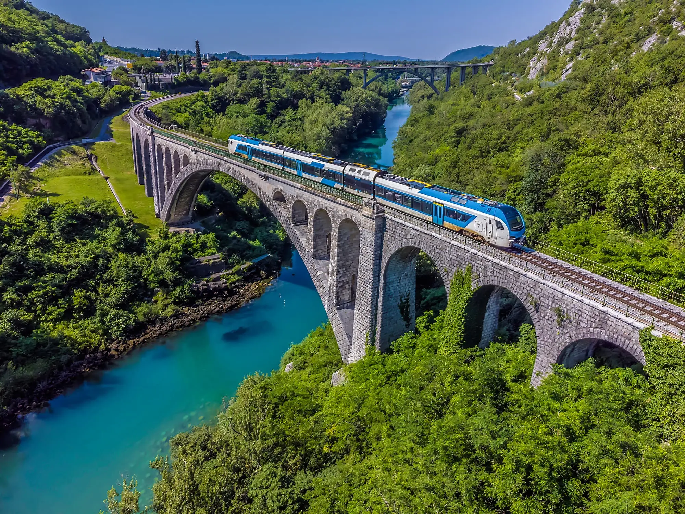
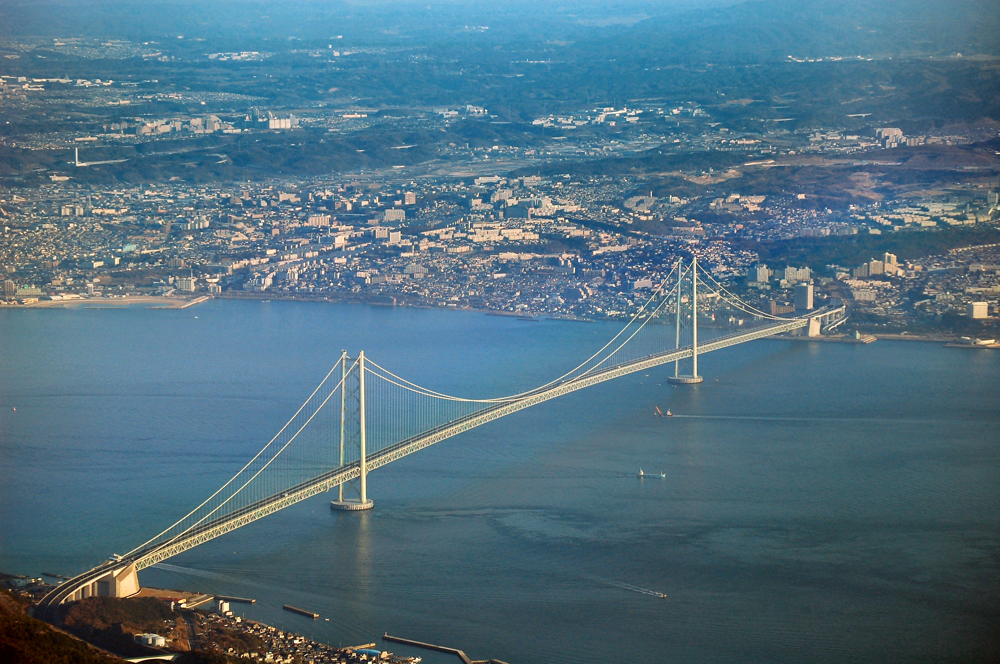
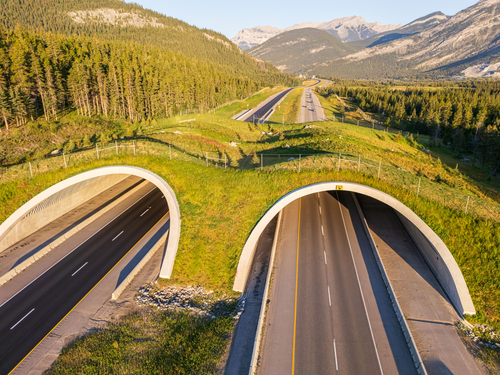

O inženjerstvu mostova
1. Osnovne vrste i istorijski razvoj

Razvoj mostova pratio je tehnološku evoluciju čovječanstva. U početku su se koristila srušena stabla i jednostavne kamene ploče. Rimljani su revolucionalizovali gradnju uvođenjem lučnih mostova koji su omogućili premošćivanje znatno većih raspona zahvaljujući efikasnom rasporedu pritiska i sile težine.
Danas inženjeri razlikuju nekoliko osnovnih tipova konstrukcija: lučne, grekaste (gredne), viseće i mostove sa kablovskim zatezanjem (CSB). Svaki tip ima svoje specifične prednosti u zavisnosti od terena i opterećenja koje mora da izdrži. Izbor materijala je ključan za dugovječnost svake konstrukcije.
2. Viseći i kablovski mostovi modernog doba

Viseći mostovi predstavljaju vrhunac građevinskog inženjerstva. Njihova glavna karakteristika su masivni stubovi (piloni) i čelični kablovi koji nose glavnu sabraćajnu traku. Kao što je naglašeno u stručnoj literaturi, „fleksibilnost i snaga moraju biti savršeno izbalansirani“ kako bi se izbjegle razorne rezonantne vibracije pod uticajem jakog vjetra.
Proračuni nosivosti često uključuju složene formule gdje se opterećenje po kvadratnom metru označava eksponencijalno, na primjer 500 kg/m2, što zahtijeva upotrebu najkvalitetnijih legura čelika. Prema riječima poznatih inženjera, estetika i bezbjednost idu ruku pod ruku.
3. Inovacije i prilagodljivost dizajna
Osim tehničkih izazova, inženjeri moraju voditi računa i o ekološkom uticaju na okolinu. Kako navodi autorka knjige Arhitektura savremenog svijeta: „Graditi most znači spajati obale, ali i čuvati prirodu koja ih razdvaja.“

„Mostovi su spomenici ljudskoj hrabrosti da savlada nemoguće.“ - Nepoznati autor
Izvori informacija i slika:
- Tekst prilagođen sopstvenim riječima na osnovu stručnih članaka sa Structural Guide.
- Istorijski podaci o mostovima preuzeti sa History.com.
- Slike preuzete iz javnih resursa i besplatnih arhiva fotografija (Unsplash, Pexels).